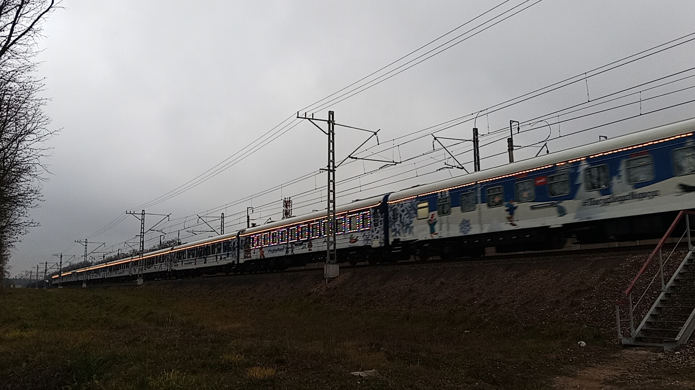
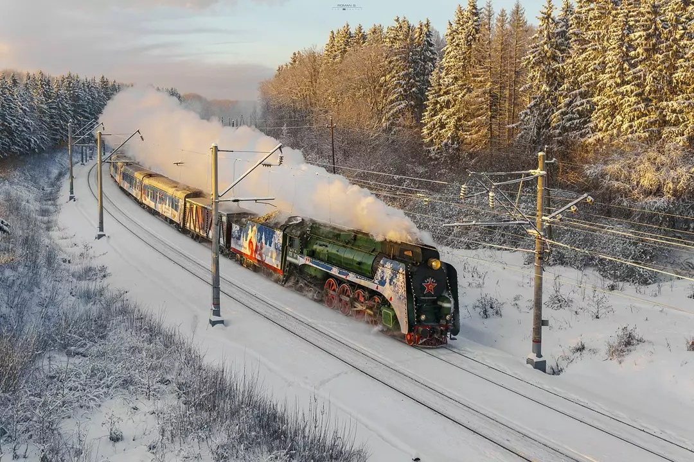
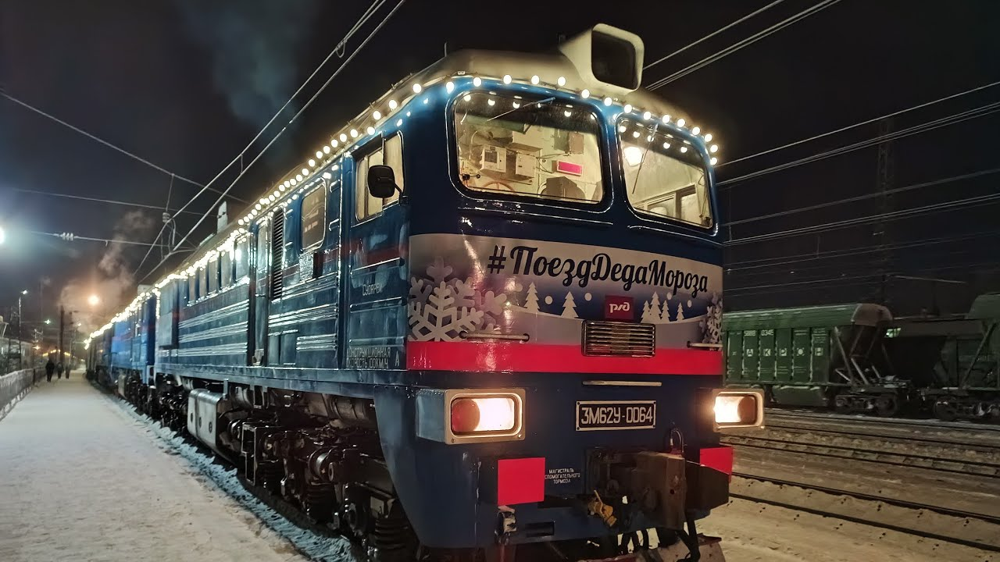

Волшебный новогодний поезд
Поезд Деда Мороза — это специальный новогодний состав Российских железных дорог, который ежегодно совершает путешествие по городам России, доставляя праздничное настроение и настоящего Деда Мороза.
Это уникальный социальный проект РЖД, направленный на создание праздника для детей по всей стране.
О проекте
Поезд Деда Мороза стал одной из самых любимых новогодних традиций в России.
🚂 Организатор
ОАО «Российские железные дороги» (РЖД)
🎁 Участие
Бесплатно для всех детей (короткая программа) и платно (стандартная)
📅 Традиция
С 2014 года, ежегодно в декабре
История проекта
Начало традиции
Первое путешествие Поезда Деда Мороза по городам России.
Развитие проекта
Ежегодные поездки, расширение маршрута и увеличение количества городов.
Юбилейный маршрут
Пятилетний юбилей проекта, специальная программа мероприятий.
Пандемийный период
Адаптация мероприятий к новым условиям с соблюдением мер безопасности.
Новые маршруты
Включение в маршрут новых регионов и городов России. В сезоне 2026-2027 поезд охватит 65 городов.
Обкатка перед стартом
Состав из 23 вагонов под тягой тепловоза 3М62У-0058 совершил обкатку по Киевскому направлению до Калуги и обратно. Именно в этот день в Москве пошел первый снег.
Маршрут путешествия (2026–2027)
Поезд Деда Мороза начнет свой путь из Великого Устюга 8 ноября и завершит его там же 9 января. За 63 дня он охватит 65 городов России.
Ключевые точки маршрута
Старт: 08.11 — Великий Устюг
Западный вектор: Мурманск, Санкт-Петербург, Псков, Смоленск, Калининград.
Южный вектор: Курск, Воронеж, Липецк, Волгоград, Астрахань.
Урал и Сибирь: Екатеринбург, Челябинск, Тюмень, Омск, Новосибирск, Красноярск, Иркутск.
Восток: Хабаровск, Владивосток.
Финиш: 09.01 — Великий Устюг.
Особенности маршрута
- Общая протяжённость: свыше 24 000 км
- Количество городов: 65
- Продолжительность: 63 дня
- Начало пути: 8 ноября из Великого Устюга
* Более подробный маршрут с датами можно посмотреть на официальном сайте проекта.
Локомотивы
В разные годы и на разных участках пути «Поезд Деда Мороза» тянут различные локомотивы. Вот основные из них:
П36-0027
Паровоз (тип «Победа»). Легендарный паровоз, который традиционно ведёт поезд на самых торжественных участках и парадах.
3М62У-0058
Тепловоз (трёхсекционный). Основной локомотив, который тянет состав с 23 вагонами во время обкатки и на основных маршрутах.
ЧС8-061
Электровоз (пассажирский). Используется на электрифицированных участках пути.
ВЛ82М-069
Электровоз (грузопассажирский). Ещё один локомотив, который может быть замечен в составе.
Интересный факт
Несмотря на то, что основным локомотивом является тепловоз 3М62У, на участках с электрификацией и на праздничных фотосессиях часто используется паровоз П36-0027, что придаёт поезду неповторимый исторический шарм.
Устройство поезда
В состав поезда традиционно включены следующие вагоны:
🎅 Вагон-приёмная
Центральный вагон с тронным залом, где принимает гостей сам Дед Мороз.
🎨 Вагон «Сказочная деревня»
Для проведения игр и квестов.
🎭 Вагон-сцена и кукольный театр
Для представлений, включая 45-минутные спектакли с кукольными героями.
🛍️ Вагон-лавка
С северными сувенирами и фото-купе.
🍽️ Вагон-буфет и ресторан
Для чаепитий и блюд северной кухни.
🛏️ Спальные вагоны
Для команды помощников Деда Мороза.
❄️ Вагон «Снежная Королева»
Путешествие в ледяное царство и мир кривых зеркал.
Программы и билеты
Посещение поезда возможно по двум видам программ:
Стандартная программа
Стоянка свыше 3 часов. Включает: прохождение квеста с аниматорами, встречу с Дедом Морозом, сладкий подарок и чаепитие в вагоне-ресторане. Стоимость — от 3000 руб.
Короткая программа
Стоянка менее 2 часов. Включает спектакль, просмотр бесплатный. Билеты на стандартную программу недоступны.
Дополнительные возможности
- Вагон «Снежная Королева» — свободное посещение в порядке живой очереди.
- Вагон-лавка и фото-купе — свободное посещение, моментальное фото (350 руб.).
- Кукольный театр — 45-минутное представление с подарком и видеопоздравлением (от 3000 руб.).
- Моментальное фото с Дедом Морозом — 600 руб. (заказать при входе в вагон).
Расписание и информация
| Дата | Город | Время стоянки |
|---|---|---|
| 08.11 | Великий Устюг | 15:00 |
| 10.11 | Инта | 11:20 - 15:00 |
| 11.11 | Лабытнанги | 14:20 - 19:20 |
| 12.11 | Воркута | 08:00 - 12:00 |
| 13.11 | Усинск | 08:00 - 10:45 |
| 13.11 | Печора | 15:00 - 18:00 |
| 14.11 | Сосногорск | 10:35 - 11:45 |
| 14.11 | Ухта | 13:25 - 16:05 |
| 15.11 | Микунь | 08:50 - 10:20 |
| 15.11 | Сыктывкар | 13:00 - 18:00 |
| 16.11 | Сольвычегодск | 08:40 - 10:10 |
| 16.11 | Котлас Южный | 10:50 - 15:45 |
| 17.11 | Киров | 09:00 - 16:00 |
| 19.11 | Зуевка | 08:00 - 09:30 |
| 19.11 | Глазов | 13:10 - 18:45 |
| 20.11 | Пермь | 09:30 - 19:30 |
| 21.11 | Серов | 14:00 - 21:00 |
| 22.11 | Нягань | 12:00 - 18:30 |
| 23.11 | Геологическая (Югорск) | 10:00 - 16:00 |
| 24.11 | Тюмень | 13:00 - 19:30 |
| 25.11 | Барабинск | 14:05 - 16:35 |
| 26.11 | Томск | 07:50 - 13:50 |
| 27.11 | Новосибирск | 09:20 - 15:20 |
| 28.11 | Омск | 11:00 - 15:55 |
| 30.11 | Новый Уренгой | 10:00 - 17:00 |
| 01.12 | Пурпе | 09:00 - 10:30 |
| 01.12 | Ноябрьск | 15:30 - 20:30 |
| 02.12 | Нижневартовск | 11:00 - 17:00 |
| 03.12 | Тобольск | 12:00 - 18:00 |
| 04.12 | Екатеринбург | 13:00 - 22:00 |
Практическая информация
- Организатор: ОАО «Российские железные дороги» (РЖД)
- Официальный канал: Telegram / ВКонтакте
- Регистрация на РКН: Госуслуги
- Официальный сайт: poezddedamoroza.ru
- Покупка билетов: на сайте rzd.ru (продажи открываются за 30 суток до прибытия, в 09:00 мск)
Фотогалерея

📌 перегон Мичуринец - Переделкино
Тепловоз 3М62У-0058 с праздничным составом во время обкатки.

📌 перегон Мичуринец - Переделкино
Поезд Деда Мороза в пути во время обкатки.

📌 Москва, Киевский вокзал
Паровоз П36 с новогодней расцветкой на вокзале.

📌 Москва, Киевский вокзал
Вагоны поезда на вокзале.
Нажмите на фото для увеличения
«Поезд Деда Мороза — это новогоднее чудо, которое каждый год приезжает в города России, чтобы подарить праздник детям и взрослым».